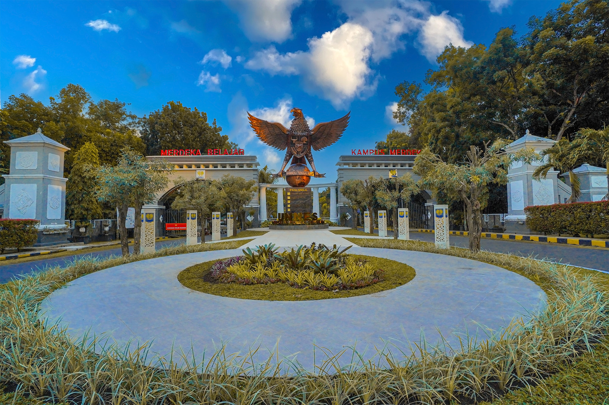

LPTK UNNES - PJOK 2026
Kreativitas Tanpa Batas
Melalui Gerak & Inovasi
Portofolio Digital PPL PPG Prajabatan Universitas Negeri Yogyakarta. Wadah integrasi teknologi dan kompetensi pedagogi modern untuk masa depan pendidikan jasmani.

Stamina
Disiplin
Profesional
Standar Kompetensi Guru Abad 21
TPACK
Implementasi Pembelajaran Digital
Kolaboratif
Bimbingan Terintegrasi GP & DPL
Ruang Karya & Artefak
Representasi kompetensi nyata melalui produk digital pembelajaran pilihan.
Lokasi LPTK Penyelenggara
Pusat pendidikan guru profesional pencetak pendidik unggul dan berkarakter.

Universitas Negeri Semarang
Menjadi LPTK pusat keunggulan yang menyelenggarakan Program Pendidikan Profesi Guru (PPG) berkualitas tinggi, menciptakan Guru PJOK yang berwawasan global, kompeten, dan humanis.
Dokumentasi Kegiatan PPL
Visualisasi aksi nyata, praktik mengajar di lapangan, dan koordinasi selama program PPG.